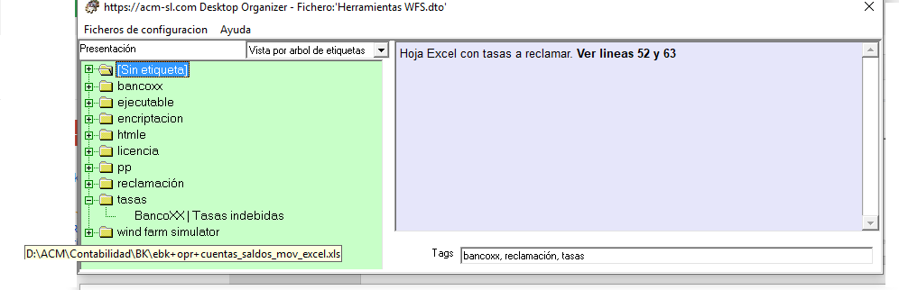
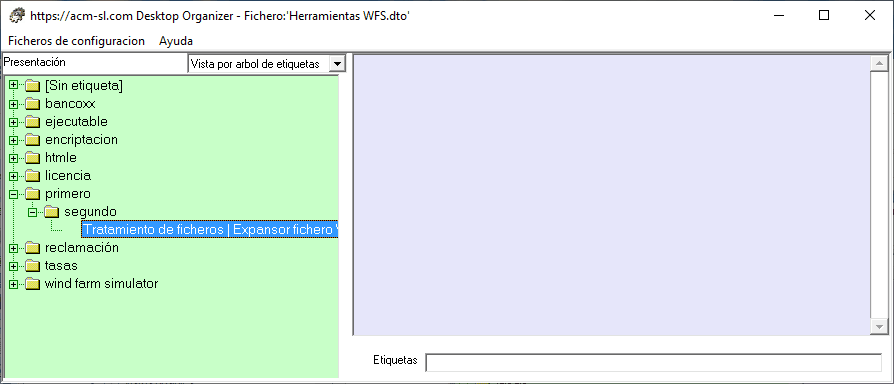

Esta vista permite explorar el contenido del fichero utilizando las etiquetas asignadas a cada Opción. Note que los Grupos no tienen etiquetas, y que cada Opción se presenta en el árbol asociada con su Grupo, en cada etiqueta que tenga asociada.

Las Opciones que no tienen ninguna etiqueta asociada se presentan en "[Sin etiquetas]"
Otro aspecto importante es la consideración de las etiquetas jerárquicas. En la siguiente figura se ha seleccionado la Opción "Expansor fichero", del Grupo "Tratamiento de ficheros", que tiene asociada la etiqueta "primero:segundo".
